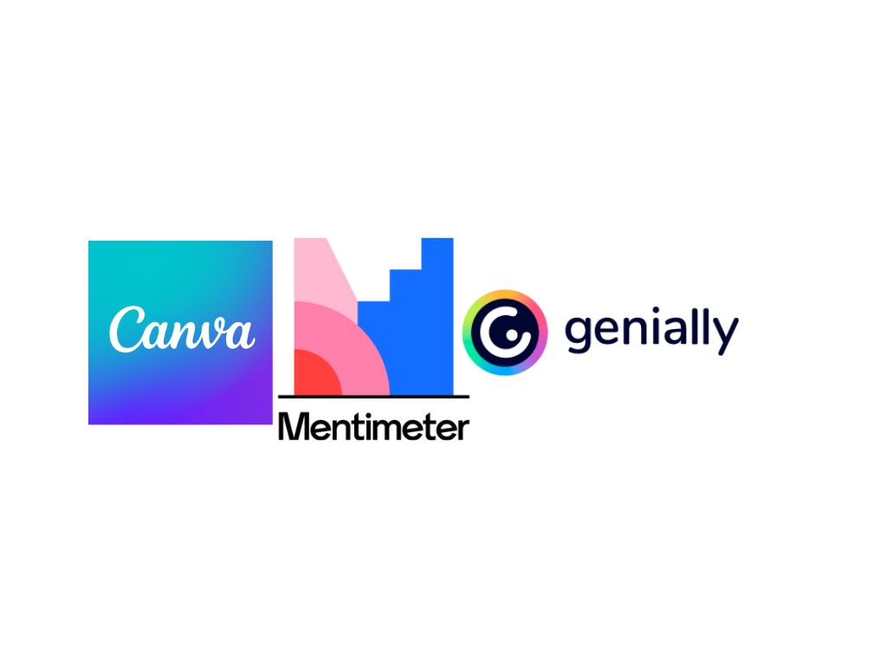

Como utilizar 3 aplicaciones tecnologicas
Este es mi proyecto, que nos ayudara a poder tener mas conocimientos de las aplicaciones que les mostrare.
Las aplicaciones tecnologicas estan hechas para hacer tareas mas rapidas y eficientes.
Desde aplicaciones de productividad como calendarios y gestores de tareas, hasta programas de colaboracion Google Drive o Trello,
aprender a usarlas puede ayudarnos a organizarnos mejor y aprovechar al maximo nuestro tiempo.
Esto es crucial, especialmente en un entorno laboral donde la competencia es feroz.
Con estas 3 aplicaciones nos facilitara las tareas y proyectos que como estudiantes, nos encargan la mayoria de profesores.
A continuacion adjuntare las paginas para que puedan ingresar a la informacion que les proporcionare de las aplicaciones.
